「ガウス過程と機械学習」を3章まで読み終えたので、復習を兼ねてJulia(1.1.0)でガウス過程を実装し、 カーネルのハイパーパラメーターをOptim.jlで推定するところまでをまとめる。数学的に細かい内容は本を読んで欲しい。 図3.23の陸上男子100mの世界記録の回帰モデルを作成することを今回の目標とする。
ガウスカーネルによる回帰:
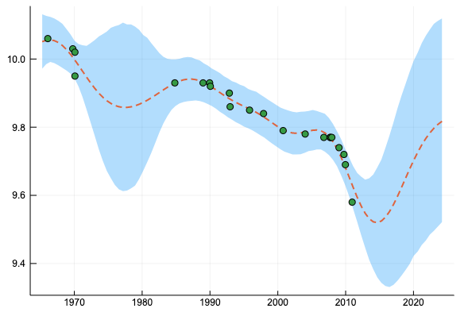
ガウスカーネル＋線形カーネルによる回帰:
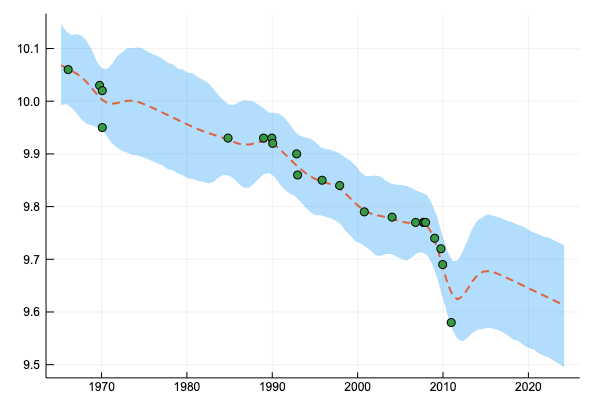
任意の有限の入力
を与えたときに、出力
が平均
分散
のガウス分布に従う時、 をガウス過程と呼び、
と書く。そして を平均関数、 をカーネル関数と呼んでいるのであった。
今回は本と同様、簡単のために平均関数が恒等的に0となるものだけを考える。
ガウスカーネルの定義
もっとも基本的なカーネルであるガウスカーネルを定義して、ガウス過程を構成する。ガウスカーネルのカーネル関数は次のものとする。
本文では
この形で紹介されていたが、後々カーネルの線型結合を考えるのでここでは の前に係数を付けない前者を採用する。
abstract type Kernel end
function cov(k::Kernel, xs1, xs2)
# covariance matrix
n1 = size(xs1, 1)
n2 = size(xs2, 1)
c = zeros(n1, n2)
for i in 1:n1
for j in 1:n2
c[i, j] = ker(k, xs1[i, :], xs2[j, :])
end
end
c
end
cov(k::Kernel, xs) = cov(k, xs, xs)
"""
Gaussian Kernel
"""
mutable struct GaussianKernel <: Kernel
theta::Float64
end
function ker(k::GaussianKernel, x1, x2)
exp(- sum((x1 - x2).^2) / k.theta)
end
分散共分散行列を計算する cov 関数とガウスカーネルを定義した。
mutable にしたのは、後々パラメーター推定をするときにパラメーターの更新をするため。
using Distributions
using Plots
gk = GaussianKernel(1)
xs = collect(-4:0.5:4)
gk_dist = MvNormal(zeros(Base.length(xs)), cov(gk, xs))
Plots.plot(xs, rand(gk_dist, 5),
label = "", xlabel = "x", ylabel = "f",
linewidth = 2,
title = "")
のガウスカーネルから生成されるガウス過程から、入力を-4から4まで0.5ごとに選んだ点とし、サンプルをいくつか取ってみる。
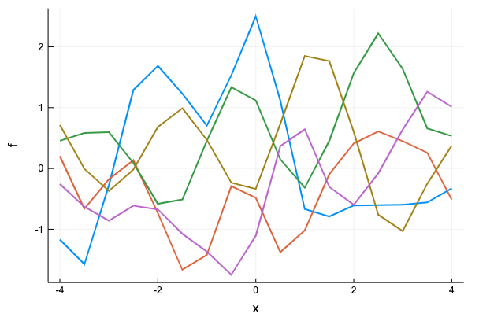
ガウス過程の定義
上でガウスカーネルを定義した方法には一つ問題があり、例えば点を0.1毎に取ると上手く動かない。
xs = collect(1:0.1:4)
gk_dist = MvNormal(zeros(Base.length(xs)), cov(gk, xs))
Plots.plot(xs, rand(gk_dist, 5),
label = "", xlabel = "x", ylabel = "f",
linewidth = 2,
title = "")
PosDefException: matrix is not positive definite; Cholesky factorization failed.
Stacktrace:
[1] checkpositivedefinite at /Users/osx/buildbot/slave/package_osx64/build/usr/share/julia/stdlib/v1.1/LinearAlgebra/src/factorization.jl:11 [inlined]
[2] #cholesky!#96(::Bool, ::Function, ::LinearAlgebra.Hermitian{Float64,Array{Float64,2}}, ::Val{false}) at /Users/osx/buildbot/slave/package_osx64/build/usr/share/julia/stdlib/v1.1/LinearAlgebra/src/cholesky.jl:153
[3] #cholesky! at ./none:0 [inlined]
[4] #cholesky!#97(::Bool, ::Function, ::Array{Float64,2}, ::Val{false}) at /Users/osx/buildbot/slave/package_osx64/build/usr/share/julia/stdlib/v1.1/LinearAlgebra/src/cholesky.jl:185
[5] #cholesky#101 at ./none:0 [inlined]
[6] cholesky at /Users/osx/buildbot/slave/package_osx64/build/usr/share/julia/stdlib/v1.1/LinearAlgebra/src/cholesky.jl:275 [inlined] (repeats 2 times)
[7] Type at /Users/apple/.julia/packages/PDMats/AObTs/src/pdmat.jl:19 [inlined]
[8] MvNormal(::Array{Float64,1}, ::Array{Float64,2}) at /Users/apple/.julia/packages/Distributions/wY4bz/src/multivariate/mvnormal.jl:196
[9] top-level scope at In[18]:6
問題が発生した原因は、 cov 関数により生成される分散共分散行列が正定値にならないことである。対策としては、分散共分散行列の対角成分に小さい数を加えて行列が正定値になるようにすれば良い。（1.4のリッジ回帰の説明を参照)
各成分ごとにカーネル関数を計算した結果得られる分散共分散行列に、単位行列の定数倍を加えて最終的に使う分散共分散行列を作るというのは、観測ノイズを考慮した観測モデルを考えるときも同じなので、今回はガウス回帰モデルを次のように定義する。
using LinearAlgebra
"""
Gaussian Process
"""
mutable struct GaussianProcess{K <: Kernel}
kernel::K
eta::Float64 # regularization parameter
GaussianProcess(kernel::K) where {K <: Kernel} = new{K}(kernel, 1e-6)
GaussianProcess(kernel::K, eta::Real) where {K <: Kernel} = new{K}(kernel, Float64(eta))
end
function cov(gp::GaussianProcess, xs)
# regularlize
n = size(xs, 1)
cov(gp.kernel, xs) + gp.eta * Matrix{Float64}(I, n, n)
end
function dist(gp::GaussianProcess, xs)
l = size(xs, 1)
k = cov(gp, xs)
MvNormal(zeros(l), k)
end
ここでは、 eta が観測ノイズの項目に相当し、観測値にノイズがないものとして考える場合は分散共分散行列の正則化のため対角成分に1e-6を加えることにする。xs の刻みを細かくしてサンプリングできることを確認しよう。
gp = GaussianProcess(GaussianKernel(1))
xs = collect(-4:0.1:4)
Plots.plot(xs, rand(dist(gp, xs), 5),
label = "", xlabel = "x", ylabel = "f",
linewidth = 2,
title = "")
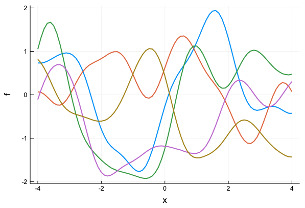
xs = collect(-4:0.01:4)
Plots.plot(xs, rand(dist(gp, xs), 5),
label = "", xlabel = "x", ylabel = "f",
linewidth = 2,
title = "")
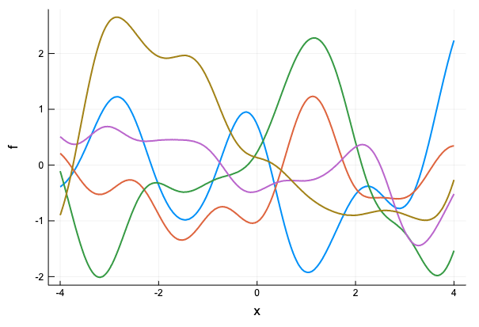
ノイズ項を入れるとこんな感じ
gp = GaussianProcess(GaussianKernel(1), 0.01)
xs = collect(-4:0.01:4)
Plots.plot(xs, rand(dist(gp, xs), 5),
label = "", xlabel = "x", ylabel = "f",
linewidth = 2,
title = "")
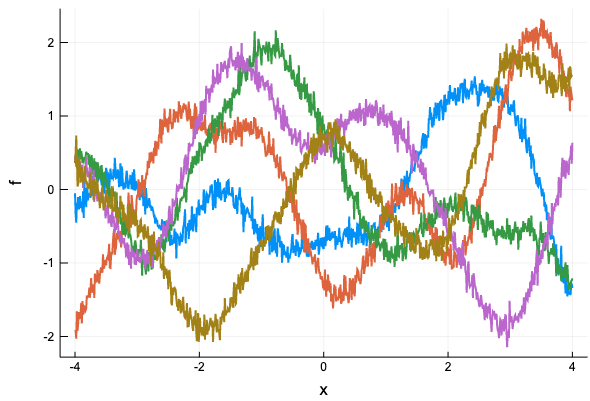
同様に定数カーネル、線形カーネルも定義しておこう。(その他のカーネルにも本文には出てくるが、ここでは省略)
"""
Constant kernel
"""
struct ConstantKernel <: Kernel end
function ker(k::ConstantKernel, x1, x2)
return 1.0
end
"""
Linear kernel
"""
struct LinearKernel <: Kernel end
function ker(k::LinearKernel, x1, x2)
return 1.0 + dot(x1, x2)
end
LinearKernelのカーネルの実装では、定数項を考慮するために1を加えている。サンプルをプロットするとそれぞれ下のようになる（コードは略）
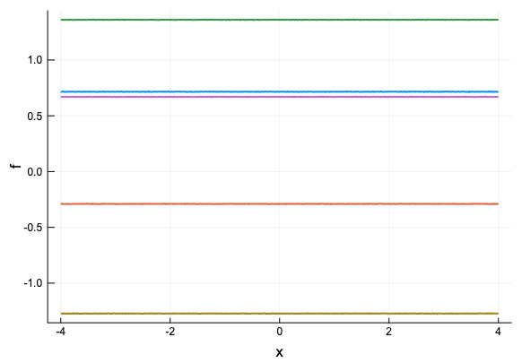
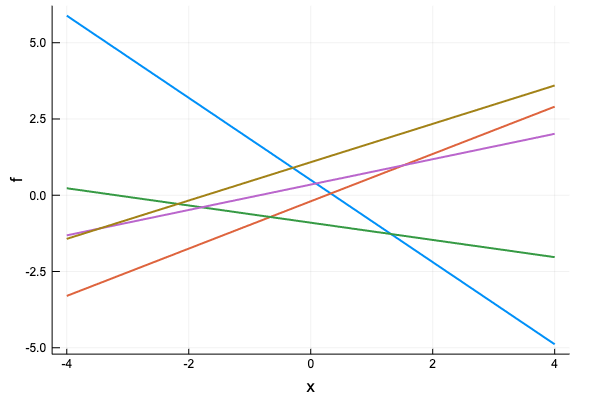
カーネルの定数倍、和
本文3.3.2にあるように、カーネルは組み合わせて使うことができ、カーネルの和・積もまたカーネル関数になる。
今回、ガウスカーネル、ガウスカーネル＋線形カーネルを考えるにあたっては、カーネルの定数倍、カーネルの和が定義されていれば十分なので、その二つを定義しておこう。
import Base: +, *
"""
Scalar product
"""
mutable struct KernelScalarProd <: Kernel
coef::Float64
kernel::Kernel
end
function ker(k::KernelScalarProd, x1, x2)
k.coef * ker(k.kernel, x1, x2)
end
"""
Sum
"""
mutable struct KernelSum <: Kernel
kernel1::Kernel
kernel2::Kernel
end
function ker(k::KernelSum, x1, x2)
ker(k.kernel1, x1, x2) + ker(k.kernel2, x1, x2)
end
*(coef::Real, k::Kernel) = KernelScalarProd(Float64(coef), k)
+(k1::Kernel, k2::Kernel) = KernelSum(k1, k2)
こんな風にカーネルの線型結合からガウス過程が定義できるようになった。下は、線形カーネルとガウスカーネルの線型結合を考えた例。
gp = GaussianProcess(2.0 * LinearKernel()
+ 0.8 * GaussianKernel(0.01))
xs = collect(-1:0.01:3)
Plots.plot(xs, rand(dist(gp, xs), 10),
label = "", xlabel = "x", ylabel = "f",
linewidth = 2,
title = "")
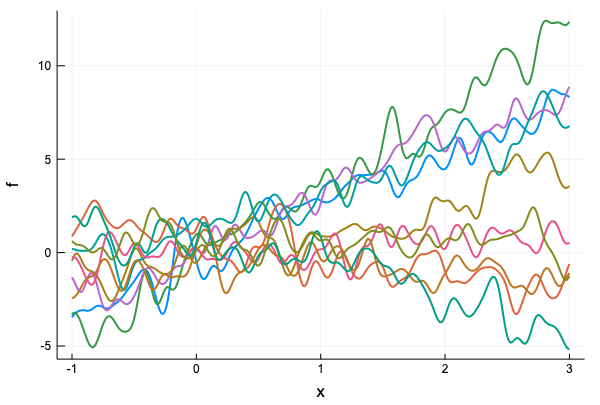
回帰
サンプリングができたので、次に回帰を行う。
回帰を行おう。本文の後半には、ガウス過程回帰の計算方法を少なくする方法が書いてあるが、まだそこまで読んでいないのでここは素直な方法(本の公式3.8)でガウス過程回帰を定義する。
function predict(gp::GaussianProcess, xtest, xtrain, ytrain)
k_star = cov(gp.kernel, xtrain, xtest)
s = cov(gp, xtest)
k_inv = inv(cov(gp, xtrain))
k_star_inv = k_star' * k_inv
mu = k_star_inv * ytrain
sig = s - k_star_inv * k_star
MvNormal(mu, sig)
end
まず、パラメーターは既知のものとして、予測分布からのサンプリングと、誤差範囲を示してみよう。
xs = [-0.5, 0.5, 1, 1.4, 3]
ys = [0.7, 1.8, 1.7, 2.3, 1]
gp = GaussianProcess(1.596 * GaussianKernel(6.560), 0.082)
xtest = collect(range(-1, stop=3.5, length=100))
pred = predict(gp, xtest, xs, ys)
qt = mapslices(x -> quantile(x, [0.025, 0.975]), rand(pred, 10000), dims = 2)
Plots.plot(xtest, qt[:, 1], fillrange = qt[:, 2], fillalpha = 0.3,
label = "", linewidth = 0)
Plots.plot!(xtest, mean(pred), label = "Mean", linewidth = 2, linestyle = :dash)
scatter!(xs, ys, label = "", title = "Posterior distribution")
実は、これだとうまくいかない
PosDefException: matrix is not Hermitian; Cholesky factorization failed.
Stacktrace:
[1] checkpositivedefinite(::Int64) at /Users/osx/buildbot/slave/package_osx64/build/usr/share/julia/stdlib/v1.1/LinearAlgebra/src/factorization.jl:11
[2] #cholesky!#97(::Bool, ::Function, ::Array{Float64,2}, ::Val{false}) at /Users/osx/buildbot/slave/package_osx64/build/usr/share/julia/stdlib/v1.1/LinearAlgebra/src/cholesky.jl:182
[3] #cholesky#101 at ./none:0 [inlined]
[4] cholesky at /Users/osx/buildbot/slave/package_osx64/build/usr/share/julia/stdlib/v1.1/LinearAlgebra/src/cholesky.jl:275 [inlined] (repeats 2 times)
[5] Type at /Users/apple/.julia/packages/PDMats/AObTs/src/pdmat.jl:19 [inlined]
[6] Type at /Users/apple/.julia/packages/Distributions/wY4bz/src/multivariate/mvnormal.jl:196 [inlined]
[7] predict(::GaussianProcess{KernelScalarProd}, ::Array{Float64,1}, ::Array{Float64,1}, ::Array{Float64,1}) at ./In[24]:10
[8] top-level scope at In[25]:7
原因は、 predict の sig が計算誤差によりSymmetricになっていないのが原因なので、predict を次のように修正する。
function predict(gp::GaussianProcess, xtest, xtrain, ytrain)
k_star = cov(gp.kernel, xtrain, xtest)
s = cov(gp, xtest)
k_inv = inv(cov(gp, xtrain))
k_star_inv = k_star' * k_inv
mu = k_star_inv * ytrain
sig = Symmetric(s - k_star_inv * k_star)
MvNormal(mu, sig)
end
すると、次のような結果が得られる。
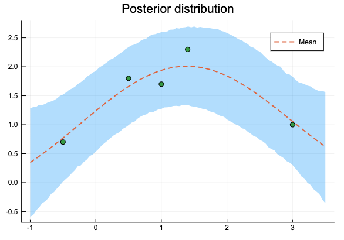
微分を定義する
学習データを , ハイパーパラメーターを , ハイパーパラメータから計算されるカーネル行列を とした時に、対数尤度関数
を最大化するハイパーパラメーターを勾配法で求めよう。 の偏微分は、
だった。パラメータ は でなくてはならないので、 と変換して を最適化する。つまり、実際に勾配法で使う偏微分は
である。
同様に
だから、 の代わりに を考えて
を計算する。まずは GaussianKernel, ConstantKernel, LinearKernel の微分を定義する。パラメーターごとの偏微分したもののリストを返すことにする
ConstantKernel, LinearKernel はパラメーターを持たないので、空のリストを返しておく。
function logderiv(k::GaussianKernel, x1, x2)
[ker(k, x1, x2) / k.theta * sum((x1 - x2).^2)]
end
function logderiv(k::ConstantKernel, x1, x2)
[]
end
function logderiv(k::LinearKernel, x1, x2)
[]
end
カーネルの定数倍、和に対して、元のカーネルの微分を利用して微分を定義する。
function logderiv(k::KernelScalarProd, x1, x2)
[ker(k.kernel, x1, x2),
k.coef * logderiv(k.kernel, x1, x2)...]
end
function logderiv(k::KernelSum, x1, x2)
[logderiv(k.kernel1, x1, x2)...,
logderiv(k.kernel2, x1, x2)...]
end
Optim.jlによる最適化
微分を定義したので、Optim.jl で最適化しよう。
まず、カーネルのパラメーターを更新する update! を定義。
function update!(k::GaussianKernel, theta)
k.theta = Float64(theta)
k
end
update!(k::ConstantKernel) = k
update!(k::LinearKernel) = k
function update!(gp::GaussianProcess, params...)
update!(gp.kernel, params[1:end - 1]...)
gp.eta = params[end]
gp
end
これを和と定数倍の場合にも延長する。和のカーネルを更新する時に、ぞれぞれのカーネルのパラメーターの数を知る必要がある。Base.length をカーネル、ガウス過程に対して拡張しよう。
Base.length(k::Kernel) = Base.length(fieldnames(typeof(k)))
Base.length(k::KernelScalarProd) = 1 + Base.length(k.kernel)
Base.length(k::KernelSum) = Base.length(k.kernel1) + Base.length(k.kernel2)
Base.length(gp::GaussianProcess) = Base.length(gp.kernel) + 1
これでようやく和と定数倍の場合の update が定義できる。
function update!(k::KernelScalarProd, params...)
k.coef = params[1]
update!(k.kernel, params[2:end]...)
k
end
function update!(k::KernelSum, params...)
l = Base.length(k.kernel1)
update!(k.kernel1, params[1:l]...)
update!(k.kernel2, params[l+1:end]...)
k
end
対数尤度関数と微分では共通する計算があるので、
Avoid repeating computations
https://julianlsolvers.github.io/Optim.jl/stable/#user/tipsandtricks/#avoid-repeating-computations
を参考にして fg! を定義。Optim.jlは関数の最小化を行うため、fg! では の値と微分を計算している。(ついでに対数尤度も定義しておく)
function logp(gp::GaussianProcess, xs, ys)
k = cov(gp, xs)
k_inv = inv(k)
-log(det(k)) - ys' * k_inv * ys
end
function fg!(gp::GaussianProcess, xs, ys, F, G, params)
# -logp and gradient
y = exp.(params)
update!(gp, y...)
k = cov(gp, xs)
k_inv = inv(k)
k_inv_y = k_inv * ys
n = size(xs, 1)
function deriv(d_mat::Matrix{<: Real})
-(-tr(k_inv * d_mat) + k_inv_y' * d_mat * k_inv_y)
end
# gradient
if G != nothing
d_tensor = zeros(n, n, Base.length(gp))
for i in 1:n
for j in 1:n
t = logderiv(gp.kernel, xs[i, :], xs[j, :])
d_tensor[i, j, 1:end - 1] = t
end
end
# eta
d_tensor[:, :, end] = y[end] .* Matrix{Float64}(I, n, n)
G .= mapslices(deriv, d_tensor, dims = [1, 2])[:]
end
# log likelihoood
if F != nothing
return -(-log(det(k)) - ys' * k_inv * ys)
end
end
まずは図3.16のデータでハイパーパラメーターを推定しよう。推定したいハイパーパラメータの形は
だから、パラメーターを仮置きして下のようにガウス過程を定義する。
gp = GaussianProcess(1.0 * GaussianKernel(1.0), 1.0)
Optim.jlのGradientDescent を使ってパラメーターを推定する。実際のハイパーパラメーターに戻すために、最後に exp を取っている。
using Optim
lower = fill(-30.0, 3)
upper = fill(30.0, 3)
res = optimize(
Optim.only_fg!((F, G, x) -> fg!(gp, xs, ys, F, G, x)),
lower, upper, [0.0, 0.0, 0.0],
Fminbox(GradientDescent()))
println(res)
pars = Optim.minimizer(res)
println("[theta1, theta2, theta3] = ", exp.(pars))
Results of Optimization Algorithm
* Algorithm: Fminbox with Gradient Descent
* Starting Point: [0.0,0.0,0.0]
* Minimizer: [0.4677728528438338,1.8810363129622452, ...]
* Minimum: 1.738770e+00
* Iterations: 3
* Convergence: true
* |x - x'| ≤ 0.0e+00: false
|x - x'| = 6.21e-08
* |f(x) - f(x')| ≤ 0.0e+00 |f(x)|: false
|f(x) - f(x')| = 9.45e-15 |f(x)|
* |g(x)| ≤ 1.0e-08: true
|g(x)| = 9.23e-09
* Stopped by an increasing objective: false
* Reached Maximum Number of Iterations: false
* Objective Calls: 353
* Gradient Calls: 353
[theta1, theta2, theta3] = [1.59643, 6.5603, 0.0819847]
男子100m走の世界記録のデータを使ったハイパーパラメーター推定
長くなったが、最後に、本と同様、男子100m走の世界記録のデータを使ってハイパーパラメーターを推定してみよう。
using CSV
using Dates
using DataFrames
df = CSV.read(IOBuffer(
"Date,Time
1964/10/15,10.06
1968/6/20,10.03
1968/10/13,10.02
1968/10/14,9.95
1983/7/3,9.93
1987/8/30,9.93
1988/8/17,9.93
1988/9/24,9.92
1991/7/14,9.9
1991/8/25,9.86
1994/7/6,9.85
1996/7/27,9.84
1999/6/16,9.79
2002/9/14,9.78
2005/6/14,9.77
2006/5/12,9.77
2006/6/11,9.77
2006/8/18,9.77
2007/9/9,9.74
2008/5/31,9.72
2008/8/16,9.69
2009/8/16,9.58"); dateformat="yyyy/mm/dd")
disallowmissing!(df)
scatter(df.Date, df.Time, label="")
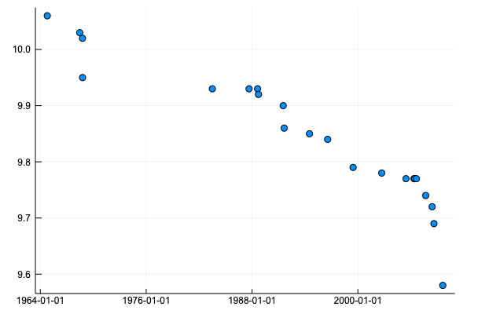
値を平均0, 分散1となるように正規化する。
using Dates
xs_raw = Dates.value.(df.Date .- Date(0, 1, 1)) ./ 365
xs_mean, xs_std = mean(xs_raw), std(xs_raw)
ys_raw = df.Time
ys_mean, ys_std = mean(ys_raw), std(ys_raw)
xs = (xs_raw .- xs_mean) ./ xs_std
ys = (ys_raw .- ys_mean) ./ ys_std
scatter(xs, ys, label="")
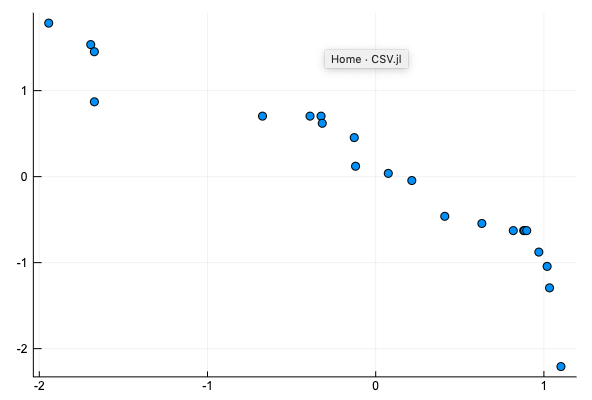
LBFGS でハイパーパラメーターを推定する。[0, 0, 0] からスタートすると、
function plot_gp_100m(gp, pars)
update!(gp, exp.(pars)...)
x_test = collect(range(-2, stop=2, length=100))
pred = predict(gp, x_test, xs, ys)
qt = mapslices(x -> quantile(x, [0.025, 0.975]), rand(pred, 10000), dims = 2)
# convert
x_test = x_test .* xs_std .+ xs_mean
qt = qt .* ys_std .+ ys_mean
Plots.plot(x_test, qt[:, 1], fillrange = qt[:, 2], fillalpha = 0.3,
label = "", linewidth = 0)
Plots.plot!(x_test, mean(pred) .* ys_std .+ ys_mean, label = "", linewidth = 2, linestyle = :dash)
scatter!(xs_raw, ys_raw, label = "")
end
gp = GaussianProcess(1.0 * GaussianKernel(1.0), 1.0)
res = optimize(
Optim.only_fg!((F, G, x) -> fg!(gp, xs, ys, F, G, x)),
fill(-10.0, 3), fill(10.0, 3), [0.0, 0.0, 0.0],
Fminbox(LBFGS()))
println(res)
pars = Optim.minimizer(res)
println("[theta1, theta2, theta3] = ", exp.(pars))
println("logp:", logp(gp, xs, ys))
plot_gp_100m(gp, pars)
Results of Optimization Algorithm
* Algorithm: Fminbox with L-BFGS
* Starting Point: [0.0,0.0,0.0]
* Minimizer: [1.4404906589345008,2.6294999978819886, ...]
* Minimum: -1.486413e+01
* Iterations: 20
* Convergence: true
* |x - x'| ≤ 0.0e+00: true
|x - x'| = 0.00e+00
* |f(x) - f(x')| ≤ 0.0e+00 |f(x)|: true
|f(x) - f(x')| = 0.00e+00 |f(x)|
* |g(x)| ≤ 1.0e-08: false
|g(x)| = 5.07e-08
* Stopped by an increasing objective: true
* Reached Maximum Number of Iterations: false
* Objective Calls: 7536
* Gradient Calls: 7536
[theta1, theta2, theta3] = [4.22277, 13.8668, 0.102625]
logp:14.864131619224107
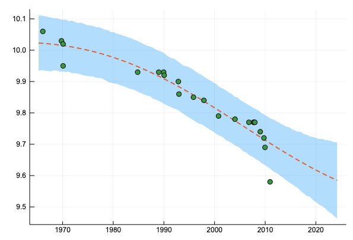
となって本に載っているのとは別の局所解に収束してしまう。[0, 0, -3] からスタートすると、
res = optimize(
Optim.only_fg!((F, G, x) -> fg!(gp, xs, ys, F, G, x)),
fill(-10.0, 3), fill(10.0, 3), [0.0, 0.0, -3.0],
Fminbox(LBFGS()))
println(res)
pars = Optim.minimizer(res)
println("[theta1, theta2, theta3] = ", exp.(pars))
println("logp:", logp(gp, xs, ys))
plot_gp_100m(gp, pars)
Results of Optimization Algorithm
* Algorithm: Fminbox with L-BFGS
* Starting Point: [0.0,0.0,-3.0]
* Minimizer: [0.4403584574143354,-1.4741097963164387, ...]
* Minimum: -1.407396e+01
* Iterations: 5
* Convergence: true
* |x - x'| ≤ 0.0e+00: true
|x - x'| = 0.00e+00
* |f(x) - f(x')| ≤ 0.0e+00 |f(x)|: true
|f(x) - f(x')| = 0.00e+00 |f(x)|
* |g(x)| ≤ 1.0e-08: false
|g(x)| = 1.45e-08
* Stopped by an increasing objective: true
* Reached Maximum Number of Iterations: false
* Objective Calls: 331
* Gradient Calls: 331
[theta1, theta2, theta3] = [1.55326, 0.228982, 0.0429989]
logp:14.073964533876048
と、本と同様の回帰結果が得られる。(パラメーターの値は本と違ってしまっているが…)
最後に、ガウスカーネル + 線形カーネルによる回帰を行ってみよう。
gp_2 = GaussianProcess(1.0 * ConstantKernel() + 1.0 * LinearKernel() + 1.0 * GaussianKernel(1.0), 1.0)
res = optimize(
Optim.only_fg!((F, G, x) -> fg!(gp_2, xs, ys, F, G, x)),
fill(-10.0, 5), fill(10.0, 5), [0.0, 0.0, 0.0, 0.0, -3.0],
Fminbox(LBFGS()))
println(res)
pars = Optim.minimizer(res)
println("[theta1, theta2, theta3, theta4, theta5] = ", exp.(pars))
println("logp:", logp(gp_2, xs, ys))
plot_gp_100m(gp_2, pars)
Results of Optimization Algorithm
* Algorithm: Fminbox with L-BFGS
* Starting Point: [0.0,0.0,0.0,0.0,-3.0]
* Minimizer: [-3.591175043240611,-0.6634886622587809, ...]
* Minimum: -1.970913e+01
* Iterations: 12
* Convergence: true
* |x - x'| ≤ 0.0e+00: true
|x - x'| = 0.00e+00
* |f(x) - f(x')| ≤ 0.0e+00 |f(x)|: true
|f(x) - f(x')| = 0.00e+00 |f(x)|
* |g(x)| ≤ 1.0e-08: false
|g(x)| = 6.18e+00
* Stopped by an increasing objective: true
* Reached Maximum Number of Iterations: false
* Objective Calls: 4960
* Gradient Calls: 4960
[theta1, theta2, theta3, theta4, theta5] = [0.0275659, 0.515051, 0.110337, 0.0252142, 0.0470559]
logp:19.709131389510937
内容をまとめたJupyter Notebook ->
https://nbviewer.jupyter.org/github/matsueushi/notebook_blog/blob/master/gp_blog.ipynb
カーネル部分をjlファイルに分離し、指数カーネルや周期カーネルも定義したレポジトリはこちら ->
https://github.com/matsueushi/gp_and_mlp